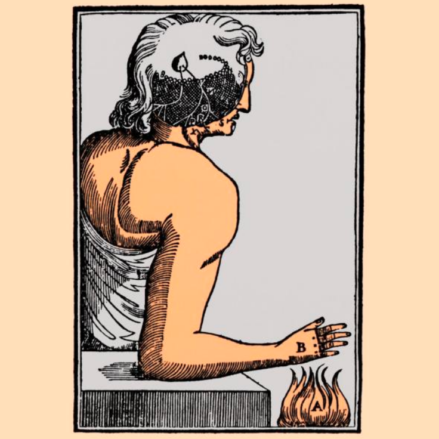

Rivals to interactionism
Wed., Jan. 29
This class session covers those successors of Descartes (all dualists in some sense) who abandoned his interactionism and developed different ways of
understanding mind-body relations, as well as causation in general: (1) Occasionalism (Nicolas Malebranche and others); (2) Dual-aspect
theory (Baruch Spinoza); (3) Pre-established harmony (G. W. Leibniz). We also touch on Anne Conway’s monism of degree and David
Hume’s skeptical critique of causal necessity.
Key Concepts: Occasionalism, Dual-Aspect Theory, Pre-Established Harmony
Readings:
Other Resources:
Stanford Encyclopedia of Philosophy
Internet Encyclopedia of Philosophy